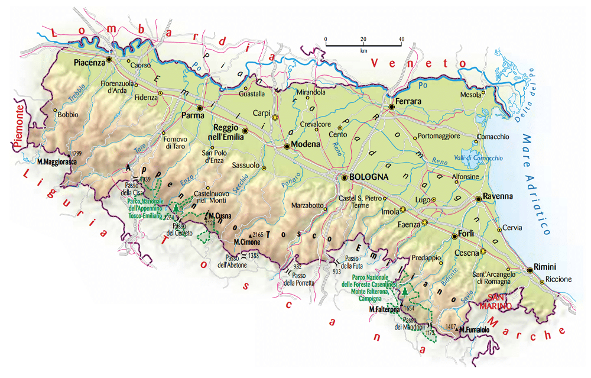
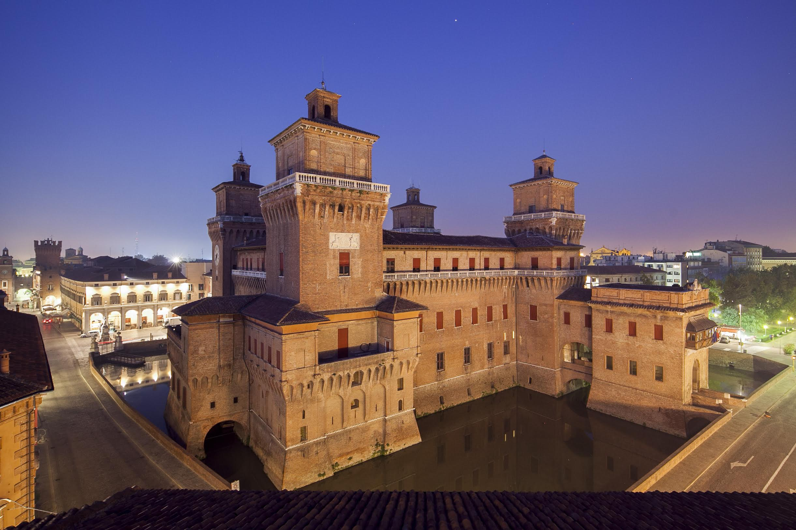

| Nome |
Emilia-Romagna |
| Capoluogo |
Città metropolitana di Bologna (BO) |
| Data di Istituzione |
7 Giugno 1970 |
| Altitudine media |
211 m.s.l.m |
| Superficie |
22510 km^2 |
| Abitanti (agosto 2023) |
4.431.057 |
| Densità |
197 ab/km^2 |
| Comuni |
330 |
| Province |
Ferrara (FE) - Forlì-Cesena (FC) - Modena (MO) - Parma (PR) - Piacenza (PC) - Ravenna (RA) - Reggio Emilia (RE) - Rimini (RN) |
| Confini |
Liguria, Lombardia, Marche, Piemonte, Toscana, Veneto, San Marino, Mar Adriatico, Mar Tirreno |
| Patrono |
Sant'Apollinare di Ravenna |
| PIL procapite (2017) |
35.800€ |
Posto da visitare assolutamente: Castello Estense di Ferrara - Ferrara (FE)
Il Castello Estense è una delle principali attrazioni storiche e
culturali della città di Ferrara, situata nell'Emilia-Romagna,
nel nord Italia. Ecco alcune informazioni sul Castello Estense:
Storia:
Il Castello Estense, anche noto come Castello di San Michele,
fu costruito nel XIV secolo. La sua costruzione iniziò nel 1385 per
volere di Niccolò II d'Este, signore di Ferrara, come strumento di difesa
contro i moti popolari e per assicurare il controllo politico sulla città.
Architettura:
Il castello è un esempio di architettura militare medioevale e rinascimentale.
La struttura è circondata da un fossato d'acqua e presenta quattro poderose
torri angolari, ciascuna con un diverso stile architettonico.
La facciata principale, rivolta verso la città, è decorata con merli ghibellini e
finestre ogivali.
Uso come residenza ducale:
Nel corso dei secoli, il Castello Estense non fu solo una struttura difensiva,
ma anche una residenza ducale. Le sue stanze interne sono state arredate e
decorate per rappresentare il lusso e il potere della corte estense.
Il Torrione di San Paolo:
Una delle torri più imponenti del castello è il Torrione di San Paolo.
Questa torre fu utilizzata come prigione durante il periodo in cui il castello
fungeva da residenza ducale. Oggi, il Torrione è accessibile ai visitatori,
offrendo una vista panoramica sulla città di Ferrara.
Museo Civico d'Arte Antica:
Parte del Castello Estense ospita il Museo Civico d'Arte Antica,
che espone una collezione di opere d'arte, dipinti, arredi e oggetti
che illustrano la storia e la cultura di Ferrara.
Feste e eventi:
Il Castello Estense è spesso utilizzato come cornice per eventi culturali,
mostre d'arte, concerti e festival. La sua atmosfera storica e la bellezza
architettonica lo rendono un luogo suggestivo per svariati tipi di manifestazioni.
Patrimonio dell'UNESCO:
Il centro storico di Ferrara, che include il Castello Estense,
è stato dichiarato Patrimonio dell'Umanità dall'UNESCO nel 1995,
riconoscendo il suo valore storico e architettonico.
Il Castello Estense è quindi non solo un importante monumento storico,
ma anche un simbolo della potenza e della cultura della famiglia d'Este a Ferrara.
La sua presenza continua a contribuire alla ricchezza culturale della città.
